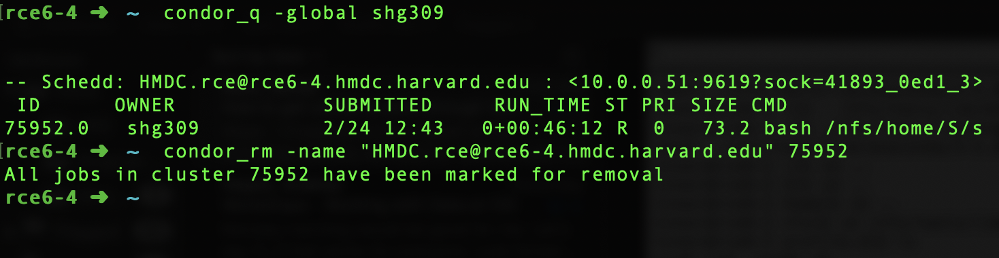

Running Python Remotely
Option 1: Jupyter Lab¶
Note
- Compared to working with Jupyter notebooks on the cluster using the NoMachine GUI (which is stuttery because of high latency), running them remotely provides a convenient low latency alternative
- Although Jupyter notebooks have become the de facto method to work on Python, since they are not simple text files, they are harder to manage using Git than
.pyscripts
Setup¶
-
SSH into the cluster, using portforwarding
1 2
# Replace "<rce_username>" with your RCE username ssh -Y -L 8889:localhost:8889 <rce_username>@rce.hmdc.harvard.edu
-
Load
condainto the shellWarning
Be careful while editing
~/.bashrcand~/.bash_profilefiles - they are executed each time your shell opens, and you don't want to mess it up and be unable to access your account.Add the following line (exactly as it is, including the period) to your
~/.bashrc:1
. /nfs/tools/lib/anaconda/3-5.2.0/etc/profile.d/conda.sh
If you aren't sure how to do this, run the following command and it'll do it for you:
1
echo ". /nfs/tools/lib/anaconda/3-5.2.0/etc/profile.d/conda.sh" >> ~/.bashrc
-
Create and prepare a conda environment, and activate it with the following commands:
1 2 3 4 5 6 7 8 9 10 11 12 13 14 15 16
# Navigate to a folder with >10GB available space (one of your shared_space dirs) # Ideally this path should have no spaces # Example: cd ~/shared_space/cid_saudi/shreyas/misc/envs/ cd ~/shared_space/<rest_of_path> mkdir cid_env && cd cid_env # Create conda environment in the current folder conda create --prefix=cid python=3 # Edit conda config file ~/.condarc to specify location of environment echo "envs_dirs:\n - $HOME/shared_space/<path_to_environment>" >> ~/.condarc # Activate conda environment (can now be done from any folder) conda activate cid # Install necessary packages ## Add conda-forge as the main channel for downloading packages (optional) conda config --add channels conda-forge ## Download required packages conda install -c conda-forge jupyterlab nodejs
- Create configuration file for Jupyter
1 2
# Configure JupyterLab jupyter notebook --generate-config - Prepare condor submission and connection scripts
1 2 3 4 5 6 7 8 9 10
# Make a directory somewhere to house the condor scripts mkdir ~/condorscripts && cd ~/condorscripts && mkdir condorlogs # Download Jupyter submission script from Github Repo curl -O https://raw.githubusercontent.com/cid-harvard/workshop-cluster-training/master/assets/condorscripts/jupyter.submit -O https://raw.githubusercontent.com/cid-harvard/workshop-cluster-training/master/assets/condorscripts/run_jupyter.sh # Automatically replace "~" in jupyter.submit with the absolute path to your HOME directory sed -i 's@\~@'"$HOME"'@' jupyter.submit # Download Jupyter connection script curl -O https://raw.githubusercontent.com/cid-harvard/workshop-cluster-training/master/assets/condorscripts/condorsshrce.sh # Automatically replace "username" with the username sed -i 's/username/'"$USER"'/' condorsshrce.sh
Running Python through Jupyter¶
-
SSH into the cluster, using portforwarding (if you haven't yet)
1 2
# Replace "<rce_username>" with your RCE username ssh -Y -L 8889:localhost:8889 <rce_username>@rce.hmdc.harvard.edu
-
Submit Jupyter job
1 2
# Submit condor script condor_submit ~/condorscripts/jupyter.submit -
Use tmux to handle connection errors/closures
1 2 3 4
# Start a new tmux window tmux new # SSH to the machine running your jupyter server . ~/condorscripts/condorsshrce.sh $USER
Tip: tmux keyboard shortcuts and commands
- New tmux window:
tmux new - Detach tmux window:
ctrl+b, thend - Reattach latest tmux window:
tmux a - New horizontal pane:
ctrl+b, then" - New vertical pane:
ctrl+b, then% - Kill current pane:
ctrl+b, thenx, theny - Move between panes:
ctrl+b, then arrow keys - Stop moving, or cancel a tmux-specific command:
escape - Kill all tmux sessions:
tmux kill-server
- New tmux window:
-
In your browser, go to
localhost:8889, and voila! - Once you're done, you can close the compute node using
ctrl+d, you might then have to pressctrl+cif your login node is taking time to appear -
Remember to remove the job once you're finished:
1 2 3 4
# Look up running jobs condor_q -global $USER # Remove job condor_rm -name "<machine_name>" <ID>
Example

Option 2: Atom + Hydrogen¶
Note
- The text editor Atom, using the package Hydrogen, allows you to run code interactively, inspect data and plot using Jupyter kernels.
- Allows the option of working on
.pyfiles directly, with low latency.
Setup¶
Setting up the Jupyter Kernel¶
The steps for setting up the Jupyter kernel are the same as for Option 2: Jupyter Lab.
Setting up Atom¶
You can learn some Atom basics here
-
Install required packages
To install a package on atom, press
Cmd+Shift+P(Mac) orCmd+Shift+P(Windows) to enter the "Command Palette", and typeInstall Packages. Install the following packages:- remote-ftp: enable browsing remote files
- hydrogen: run code through jupyter kernels
Optional (my favourite fun add-ons):
- file-icons: convenient file icons in tree view
- atom-beautify: automatically indent / beautify code according to linters
- minimap: mini view of the code on the side
-
Configure
remote_ftp- Create an empty folder in your computer. Call it
remote_atom(or any other name you might see fit). - Open Atom and click "File -> Open ->
remote_atom". This will open theremote_atomfolder as a "project". - Open the Command Palette (
Cmd+Shift+PorCtrl+Shift+P) and type "Create Sftp" and choose the option "Remote Ftp: Create Sftp Config File". You will notice that a file named.ftpconfigis automatically created in the same folder. - Replace the contents of the file with the following, modifying the
userandremoteparameters:
1 2 3 4 5 6 7 8 9 10
{ "protocol": "sftp", "host": "rce.hmdc.harvard.edu", // string - Hostname or IP address of the server. Default: 'localhost' "port": 22, // integer - Port number of the server. Default: 22 "user": "<username>", // string - Username for authentication. Default: (none) "promptForPass": true, // boolean - Set to true for enable password/passphrase dialog. This will prevent from using cleartext password/passphrase in this config. Default: false "remote": "/nfs/home/S/shg309/ <replace with your own home folder>", // try to use absolute paths starting with / "connTimeout": 10000, // integer - How long (in milliseconds) to wait for the SSH handshake to complete. Default: 10000 "keepalive": 10000 // integer - How often (in milliseconds) to send SSH-level keepalive packets to the server (in a similar way as OpenSSH's ServerAliveInterval config option). Set to 0 to disable. Default: 10000 }
- Open the Command Palette and type "Remote Ftp", and choose the option
Toggle. This will open up aRemotetab on the left hand side. - In the
Remotetab, click onConnect, and voila! You can now edit files on the cluster as if they were on your own computer!
Warning
- Don't use the
remote_atomproject unless you're working on the cluster. The files in the folder are uploaded automatically to the cluster when you reconnect.
Note
- Once you're done, remember to
Disconnect. - Optional: Through the Command Palette, go to "View Installed Packages" --> remote_ftp's settings --> change
Auto Upload on Savefromalwaystoonly when connected
- Create an empty folder in your computer. Call it
-
Configure Hydrogen
- Through the Command Palette, go to "View Installed Packages" --> hydrogen's settings --> change
Kernel Gatewaysto the following:
1
[{"name":"RCE Jupyter", "options":{"baseUrl":"http://localhost:8889"}}] - Through the Command Palette, go to "View Installed Packages" --> hydrogen's settings --> change
Running Stata through Hydrogen¶
-
Connect to Remote Kernel
- Open a Python
.pyscript - Through the Command Palette, go to "Connect to Remote Kernel".
First-time users
If this is the first time you're connecting, you might be asked to "Authenticate Using Token". To find the authentication token, on an RCE node, type the following:
1 2 3 4
# Activate conda environment conda activate cid # Get Jupyter token jupyter notebook list
The token will be of the form:
http://localhost:8889/?token=a61elkjziunns1523e70eb18a452cfsdf9812302199b87e - Open a Python
-
Running code
- Select code you want to run, and hit
Cmd+Enter(Mac) orCtrl+Enter(Windows) - To run all code, hit
Cmd+Option+Enter(Mac) orCtrl+Alt+Enter(Windows)
- Select code you want to run, and hit
-
Magics
- You can use Jupyter magics through Hydrogen
1 2 3 4 5 6 7 8 9 10 11 12 13 14 15 16 17 18 19 20 21 22
%reset -f # Reset all variables in memory %matplotlib inline # Inline matplotlib figures import numpy as np import pandas as pd import matplotlib.pyplot as plt # Simple tests print('Hello world!') 17+25 # Print dataframe pd.DataFrame({'col1': [1, 2], 'col2': [3, 4]}) # Show plot N = 50 x = np.random.rand(N) y = np.random.rand(N) colors = np.random.rand(N) area = (30 * np.random.rand(N))**2 # 0 to 15 point radii plt.scatter(x, y, s=area, c=colors, alpha=0.5) plt.show()